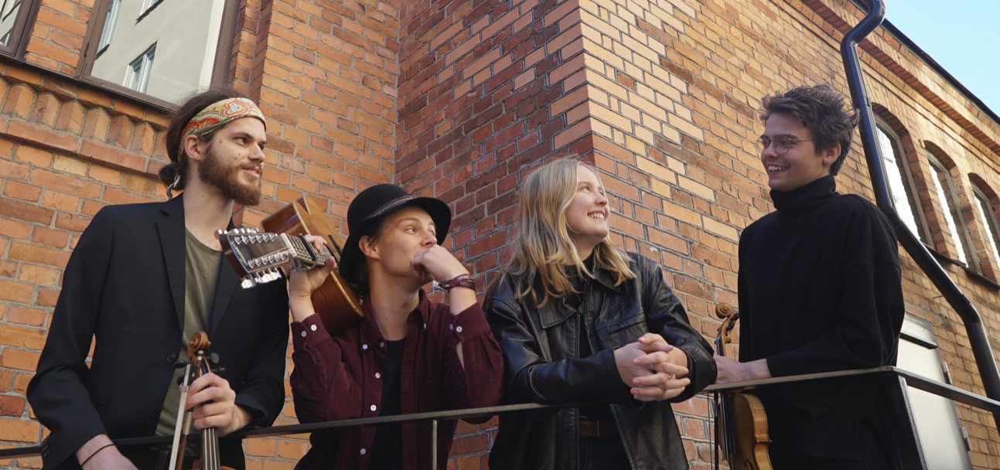

Norrtälje Folk är en förening som ordnar folkmusikträffar i Norrtälje Folkets Hus dit vi bjuder in artister och grupper från när och fjärran. Kvällen brukar starta med en konsert för att sedan fortsätta med dans, både till kvällens huvudartister samt till lokala spelmän. Vågar man sig inte upp på dansgolvet går det såklart lika bra att sitta och lyssna till dansanta polskor, valser med mera!
I kaféet finns fikabröd, kaffe och smörgåsar till ett bra pris under hela kvällen. Det brukar också bli folkmusik-jam i kaféet så spelmän, tag med era instrument! Det är även fritt fram för den som har lust att skriva upp sig på spellistan för att spela till dans. Det händer också att vi ordnar med polskeutlärning, låtstuga eller sånglekar för barn och vuxna i samband med konsertkvällarna. Håll utkik i programmet för att se vad som händer utöver konserten. Följ oss gärna på Facebook för senaste nytt om kommande träffar och artister.
Med en musik som är både hänsynslöst innerlig och innerligt hänsynslös delar Tvesôvla med sig av sin kärlek för den svenska folkmusiktraditionen. Ömma visor samsas med virvlande polskor och bildar en uppriktig och omtumlande konsertupplevelse. Tvesôvla kommer att spela dansskorna av er!
Tvesôvla bildades på Kungliga Musikhögskolan i Stockholm och består av:
Program:
Datum:
13 april 2024
Tid:
19.00 - 23.00
Plats:
Norrtälje Folkets Hus
Entré:
150:- Swish eller kontant
Smakprov:
Tvesôvla: Spelmannen den har vi kallat, efter Lena Larsson
Fiolspelaren Lena Jonsson är en av Skandinaviens mest inflytelserika musiker inom den samtida folkmusiken. Med musikalisk öppenhet och nyfikenhet hämtar hon sin inspiration från en stor bredd av genrer. Hon kombinerar sina djupa kunskaper om traditionell svensk folkmusik och soundet från rock, pop, jazz, amerikansk old time och bluegrass.
Lena Jonsson är uppvuxen i en folkmusikmiljö i Hälsingland och började spela i band redan som elvaåring. Hon är utbildad vid Musikhögskolan i Stockholm, Berklee College of Music och 2008 blev hon riksspelman.
Lena Jonsson grammisnominerades för sitt debutalbum ”Places” (2019) och blev i år vinnare i kategorin "Årets folk" för uppföljaren ”Stories from the Outside” (2021) med Lena Jonsson Trio. Under 2021 vann de även Manifestpriset.
I Lena Jonsson Trio vävs Lenas kraftfulla fiolspel och Kristofers drivande bas samman av Eriks varierade och lyhörda gitarrklanger. Räkna med att det blir en briljant folkmusikkonsert präglad av innerlig spelglädje, humor, inlevelse och utstrålning!
Program:
Datum:
14 september 2024
Tid:
19.00 - 23.00
Plats:
Norrtälje Folkets Hus
Entré:
200:- Swish eller kontant
Vi planerar för ytterligare en konsert under hösten 2024, någon gång i november. Exakt vad det blir och vilket datum som gäller är ännu inte klart, men vi jobbar för att få ihop något intressant. Är du eller din grupp intresserade av att komma till oss får du gärna skicka ett mail till info@norrtaljefolk.se